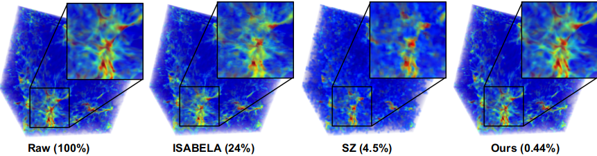
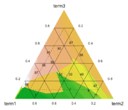
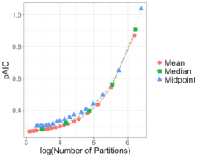
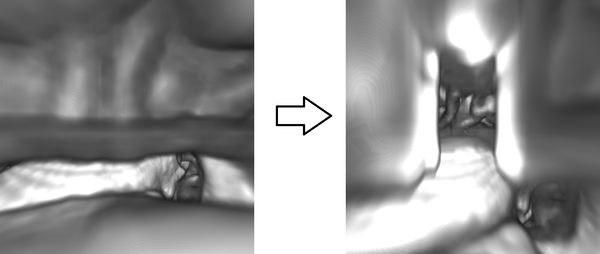
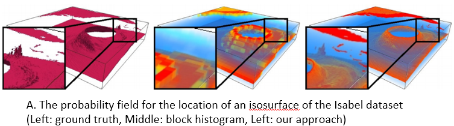
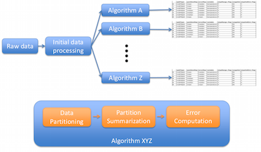
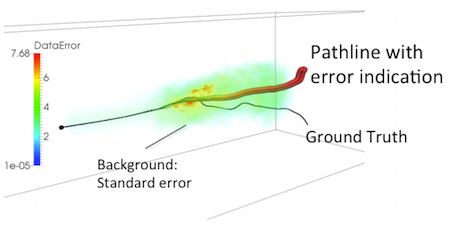

Professor Han-Wei Shen recently gave the keynote at Pacific Visualization 2019, showcasing and highlighting the collaborative research in this project.
Han-Wei Shen, Keynote, Pacific Visualization 2019
Link to this post
Cosmologists build simulations for the evolution of the universe using different initial parameters. By exploring the datasets from different simulation runs, cosmologists can understand the evolution of our universe and approach its initial conditions. A cosmological simulation nowadays can generate datasets on the order of petabytes. Moving datasets from the supercomputers to post data analysis machines is infeasible. We propose a novel approach called statistical super-resolution to tackle the big data problem for cosmological data analysis and visualization. It uses datasets from a few simulation runs to create a prior knowledge, which captures the relation between low- and high-resolution data. We apply in situ statistical down-sampling to datasets generated from simulation runs to minimize the requirements of I/O bandwidth and storage. High-resolution datasets are reconstructed from the statistical down-sampled data by using the prior knowledge for scientists to perform advanced data analysis and render high-quality visualizations.
Ko-Chih Wang, Jiayi Xu, Jonathan Woodring, Han-Wei Shen
Link to Pacific Vis 2019 presentation
Link to this post 
The continual growth in size and complexity of computer simulations poses challenges to data storage and post-processing. One solution is to partition the simulation output, storing only a fraction of the data generated. Previously, we developed methods for judiciously partitioning the simulated output, both within each time step, and over time, as the simulation is running.
In the partitioning framework, post-processing and analysis is performed using only the partitioned data. Poorly-designed partitions can lead to incorrect conclusions. We have introduced a metric and studied the parameter space to produce partitions that closely mirror the structure of the full data, resulting in improved understanding of the partitioning process.
Future work includes:
Chelsea Challacombe, Abigael Nachtsheim, Emily Casleton, Jonathan Woodring
Link to upcoming JSM 2019 talk
Link to quad chart for future work
Link to this post

The MINOS Project (an NA-22 venture) has a massive amount of sensor data to study the life cycle of a reactor facility. For example, with only one day of electromagnetic sensor data, it contains 2 TB just for that sensor. It desirable to compress this data to make the data movement, storage, and analysis manageable.
Although the data appear to be unpredictable, they are not a stochastic or random sequence-- can a machine learning model learn to predict the data, i.e., compress the data: Can we represent the data where the size of the model and a subset of the data can be used to reconstruct the data at low error? In our previous work in statistical super-resolution, we showed that this method worked with cosmology data.
Thus, we continue to explore the possibility for machine learning models (high-dimensional regression) to contribute to data compression techniques, by integrating new machine learning methods with existing methods in signal processing and compression.
Jingyi Shen, Robert Gross, Jonathan Woodring
Link to summer presentation slides
Link to this postOver the last decade, ensemble visualization has witnessed a significant development due to the wide availability of ensemble data, and the increasing visualization needs from a variety of disciplines. From the data analysis point of view, it can be observed that many ensemble visualization works focus on the same facet of ensemble data, use similar data aggregation or uncertainty modeling methods. However, the lack of reflections on those essential commonalities and a systematic overview of those works prevents visualization researchers from effectively identifying new or unsolved problems and planning for further developments.
In this paper, we take a holistic perspective and provide a survey of ensemble visualization. Specifically, we study ensemble visualization works in the recent decade, and categorize them from two perspectives: (1) their proposed visualization techniques; and (2) their involved analytic tasks. For the first perspective, we focus on elaborating how conventional visualization techniques (e.g., surface, volume visualization techniques) have been adapted to ensemble data; for the second perspective, we emphasize how analytic tasks (e.g., comparison, clustering) have been performed differently for ensemble data. From the study of ensemble visualization literature, we have also identified several research trends, as well as some future research opportunities.
Junpeng Wang, Subhashis Hazarika, Cheng Li, Han-Wei Shen
Link to this postDistributions are often used to model uncertainty in many scientific datasets. To preserve the correlation among the spatially sampled grid locations in the dataset, various standard multivariate distribution models have been proposed in visualization literature. These models treat each grid location as a univariate random variable which models the uncertainty at that location. Standard multivariate distributions (both parametric and nonparametric) assume that all the univariate marginals are of the same type/family of distribution. But in reality, different grid locations show different statistical behavior which may not be modeled best by the same type of distribution. In this paper, we propose a new multivariate uncertainty modeling strategy to address the needs of uncertainty modeling in scientific datasets.
Our proposed method is based on a statistically sound multivariate technique called Copula, which makes it possible to separate the process of estimating the univariate marginals and the process of modeling dependency, unlike the standard multivariate distributions. The modeling flexibility offered by our proposed method makes it possible to design distribution fields which can have different types of distribution (Gaussian, Histogram, KDE etc.) at the grid locations, while maintaining the correlation structure at the same time. Depending on the results of various standard statistical tests, we can choose an optimal distribution representation at each location, resulting in a more cost efficient modeling without significantly sacrificing on the analysis quality. To demonstrate the efficacy of our proposed modeling strategy, we extract and visualize uncertain features like isocontours and vortices in various real world datasets. We also study various modeling criterion to help users in the task of univariate model selection.
Subhashis Hazarika, Ayan Biswas, Han-Wei Shen
Link to this postEnsemble simulations are becoming prevalent in various scientific and engineering domains, such as climate, weather, aerodynamics, and computational fluid dynamics. An ensemble is a collection of data produced by simulations for the same physical phenomenon conducted with different initial conditions, parameterizations, or phenomenological models. Ensemble simulations are used to simulate complex systems, study sensitivities to initial conditions and parameters, and mitigate uncertainty. For example, in numerical weather prediction, ensemble forecasts with different fore- cast models and initial conditions are widely used to indicate the range of possible future states of the atmosphere.
We propose surface density estimate (SDE) to model the spatial distribution of surface features—isosurfaces, ridge surfaces, and streamsurfaces—in 3D ensemble simulation data. The inputs of SDE computation are surface features represented as polygon meshes, and no field datasets are required (e.g., scalar fields or vector fields). The SDE is defined as the kernel density estimate of the infinite set of points on the input surfaces and is approximated by accumulating the surface densities of triangular patches. We also propose an algorithm to guide the selection of a proper kernel bandwidth for SDE computation. An ensemble Feature Exploration method based on Surface densiTy EstimAtes (eFESTA) is then proposed to extract and visualize the major trends of ensemble surface features. For an ensemble of surface features, each surface is first transformed into a density field based on its contribution to the SDE, and the resulting density fields are organized into a hierarchical representation based on the pairwise distances between them. The hierarchical representation is then used to guide visual exploration of the density fields as well as the underlying surface features. We demonstrate the application of our method using isosurface in ensemble scalar fields, Lagrangian coherent structures in uncertain unsteady flows, and streamsurfaces in ensemble fluid flows.
Wenbin He, Hanqi Guo, Han-Wei Shen, Tom Peterka
Link to this postDeep Q-Network (DQN), as one type of deep reinforcement learning model, targets to train an intelligent agent that acquires optimal actions while interacting with an environment. The model is well known for its ability to surpass professional human players across many Atari 2600 games. Despite the superhuman performance, in-depth understanding of the model and interpreting the sophisticated behaviors of the DQN agent remain to be challenging tasks, due to the long-time model training process and the large number of experiences dynamically generated by the agent. In this work, we propose DQNViz, a visual analytics system to expose details of the blind training process in four levels, and enable users to dive into the large experience space of the agent for comprehensive analysis. As an initial attempt in visualizing DQN models, our work focuses more on Atari games with a simple action space, most notably the Breakout game. From our visual analytics of the agent’s experiences, we extract useful action/reward patterns that help to interpret the model and control the training. Through multiple case studies conducted together with deep learning experts, we demonstrate that DQNViz can effectively help domain experts to understand, diagnose, and potentially improve DQN models.
Junpeng Wang, Liang Gou, and Han-Wei Shen
* This paper was awarded Honorable Mention for Best Paper at IEEE VAST 2018.
Link to IEEE VAST 2018 pre-print copy
Link to this postCoDDA (Copula-based Distribution Driven Analysis) is a flexible framework for large-scale multivariate datasets. A common strategy to deal with large-scale scientific simulation data is to partition the simulation domain and create statistical data summaries. Instead of storing the high-resolution raw data from the simulation, storing the compact statistical data summaries results in reduced storage overhead and alleviated I/O bottleneck. Such summaries, often represented in the form of statistical probability distributions, can serve various post-hoc analysis and visualization tasks. However, for multivariate simulation data using standard multivariate distributions for creating data summaries is not feasible. They are either storage inefficient or are computationally expensive to be estimated in simulation time (in situ) for large number of variables. In this work, using copula functions, we propose a flexible multivariate distribution-based data modeling and analysis framework that offers significant data reduction and can be used in an in situ environment. Using the proposed multivariate data summaries, we perform various multivariate post-hoc analyses like query-driven visualization and sampling-based visualization. We evaluate our proposed method on multiple real-world multivariate scientific datasets. To demonstrate the efficacy of our framework in an in situ environment, we apply it on a large-scale flow simulation.
Authors go here
Link to IEEE SciVis 2018 pre-print copy
Link to this postIn flow visualization and analysis, particle tracing is a fundamental technique for visualizing and analyzing flow fields. By tracing particles in the data domain, users can conduct many applications, for example, generating streamlines or pathlines, tracking particles from source to destination regions for source-destination queries, or computing FTLE fields to characterize the boundary of flow fields. In particle tracing, we always need to handle large data and the computational costs are expensive, so scalable and parallel solutions are needed.
However, it is likely that the workload is imbalanced. We proposed two solutions to address these problems. The first one is a dynamic load-balancing method based on data repartitioning for parallel particle tracing, as shown in top-half of the Figure. During run time, we periodically perform data repartitioning to balance the workload of each process based on the estimation of the block workload.
We studied this data-repartitioning method with different data sets on Vesta, a Blue Gene/Q supercomputer at Argonne National Laboratory. Compared with other load-balancing algorithms, our method does not need any preprocessing on the raw data and does not require any dedicated process for work scheduling, while it has the capability to balance uneven workload efficiently. The performance study shows improved load balance and high efficiency of this method on tracing particles in both steady and unsteady flow.
However, the this method still requires data block movement during run time, which makes it difficult to scale up. This observation prompted us to design a load-balancing algorithm from the perspective of particle distribution. Therefore, we proposed the second method, a dynamically load-balanced algorithm using k-d (short for k-dimensional) trees, which uses k-d tree decomposition to periodically evenly redistribute particles across processes for load balancing. Our final solution is a novel redesign of k-d tree decomposition, namely, the constrained k-d tree, to redistribute particles in the data-parallel particle tracing, as shown in bottom-half of the Figure.
This constrained k-d tree method has also been evaluated with various flow visualization and analysis tasks on Vesta. With up to 8K parallel processes, we demonstrated that compared with the baseline data-parallel particle tracing method, our constrained k-d tree approach significantly improves the performance in both load balancing and scalability.
[1] Jiang Zhang, Hanqi Guo, Xiaoru Yuan, and Tom Peterka. Dynamic Data Repartitioning for Load-Balanced Parallel Particle Tracing. In Proceedings of IEEE Pacific Visualization Symposium (PacificVis '18), pages 86-95, Kobe, Japan, April 10-13, 2018.
[2] Jiang Zhang, Hanqi Guo, Fan Hong, Xiaoru Yuan, and Tom Peterka. Dynamic Load Balancing Based on Constrained K-D Tree Decomposition for Parallel Particle Tracing. IEEE Transactions on Visualization and Computer Graphics (VIS '17), 24(1):954-963, 2018.
Link to this postPreliminary Results
In investigating other methods to improve the quality and size reduction of Gaussian Mixture Modeling (GMM) for cosmological simulations, we have studied the application of super-resolution techniques applied to our statistical GMM modeling. In machine learning, super-resolution methods use image training techniques to train a dictionary of high-resolution imagery. This allows image databases to reconstruct high-resolution images from low-resolution samples using the dictionary training set, to infer high-resolution information from low-resolution data.
In our work, we investigated super-resolution reconstruction of Nyx simulation data by mapping low-resolution GMM model data into a high-resolution Nyx dictionary. This allows us both to reduce the GMM model training time, by building a lower resolution GMM model, and still retain low reconstruction error and high precision through the super-resolution dictionary.
Our workflow for applying the super-resolution method to scientific data follows:
Our preliminary results show that we are able to simultaneously achieve low storage sizes of approximately 3% of the original data size, and low RMSE on average of 0.5% error for density and z-momentum, with 2% error on temperature. This method achieves better space savings and reconstruction error than plain GMM modeling of Nyx.

Ko-Chih Wang, Zarija Lukic, and Jon Woodring
Link to poster with original resolution images
Link to this postPreliminary Results
Gaussian Mixture Modeling (GMM) of large-scale cosmological data sets can take a long time, due to that typical GMM methods will attempt to train the data in one go. This requires saving all of the intermediate data from simulations, and then constructing (training) the GMM model. This is inefficient, especially for petascale and exascale supercomputers, as the GMM modeling requires massive amounts of memory and storage. To reduce the I/O burden of constructing the GMM model in the first place, we are investigating building the GMM model through incremental training.
Incremental GMM training builds the data model by sampling an existing GMM model, adding new data, and then retraining on that data set. An example workflow would be:
This amortizes the cost of building a statistical GMM model for simulations, by spreading the I/O cost and GMM building cost through incremental steps. In our initial studies, we achieve approximately 0.64% RSME error on reconstruction when allowing the number of Gaussian parameters to grow. If we keep the number of Gaussians to a fixed number, such as 5 Gaussians, the errors are larger, but within a tolerable range of 1% RSME.
In future work, we will investigate the application of in situ GMM training, as our incremental method would allow for the integration of GMM methods directly into simulations. This would bypass the need for post-processing GMM training, reducing the storage needs, and building the GMM model as the simulation runs, allowing for faster scientific analysis turn-around times.

Jiayi Xu, Zarija Lukic, and Jon Woodring
Link to poster with original resolution images
Link to this postPreliminary Results
Nyx, a DOE cosmological model, simulates the evolution of the large-scale structures in the universe, given the "initial conditions" of the universe. Though, it is not clear what initial conditions match the observable universe, thus part of the science is to find the parameterization of the simulations that best match the observed universe.
The cosmologists are typically interested in three to ten of these initial parameters of interest, which creates huge parameter space to search for the best matching conditions. With high-resolution simulations, each simulation will generate multiple quantities of interest, on a high-resolution grid, such as 4096^3. These simulations generate massive amounts of data and performing data analysis will be slow, due to the limited I/O bandwidth compared to the amount of raw data, in addition to limited storage capabilities.
To tackle the problem of analysis of massive data for cosmological studies, we are studying techniques to reduce the overall data size, but keep enough precision for high-fidelity statistical analysis. We have developed a preliminary Gaussian Mixture Model-based (GMM) Emulator to achieve our goal. The GMM-based Emulator uses multi-variate GMM methods to compactly summarize the data from simulations by modeling the cosmological data with Gaussian distributions. This allows the cosmologists to reconstruct the data for any set of initial conditions, as well as predict the data for simulations that have not been run yet. With 5 Gaussians, we are able to reduce the data to 7.5% of its original size with RMSE within the 1% error regime, which is acceptable for statistical studies of cosmological data.

Jiayi Xu, Ko-Chih Wang, Zarija Lukic, and Jon Woodring
Link to poster with original resolution images
Link to this postCreating a data representation is a common approach for efficient and effective data management and exploration. The compressed bitmap indexing is one of the emerging data representation used for large-scale data exploration. Performing sampling on the bitmapindexing based data representation allows further reduction of storage overhead and be more flexible to meet the requirements of different applications. In this paper, we propose two approaches to solve two potential limitations when exploring and visualizing the data using sampling-based bitmap indexing data representation. First, we propose an adaptive sampling approach called information guided stratified sampling (IGStS) for creating compact sampled datasets that preserves the important characteristics of the raw data. Furthermore, we propose a novel data recovery approach to reconstruct the irregular subsampled dataset into a volume dataset with regular grid structure for qualitative post-hoc data exploration and visualization. The quantitative and visual efficacy of our proposed data sampling and recovery approaches are demonstrated through multiple experiments and applications.
Tzu-Hsuan Wei, Soumya Dutta, and Han-Wei Shen
Link to this post
Analyzing scientific datasets created from simulations on modern supercomputers is a daunting challenge due to the fast pace at which these datasets continue to grow. Low cost post analysis machines used by scientists to view and analyze these massive datasets are severely limited by their deficiencies in storage bandwidth, capacity, and computational power. Trying to simply move these datasets to these platforms is infeasible. Any approach to view and analyze these datasets on post analysis machines will have to effectively address the inevitable problem of data loss. Image based approaches are well suited for handling very large datasets on low cost platforms. Three challenges with these approaches are how to effectively represent the original data with minimal data loss, analyze the data in regards to transfer function exploration, which is a key analysis tool, and quantify the error from data loss during analysis. We present a novel image based approach using distributions to preserve data integrity. At each view sample, view dependent data is summarized at each pixel with distributions to define a compact proxy for the original dataset. We present this representation along with how to manipulate and render large scale datasets on post analysis machines. We show that our approach is a good trade off between rendering quality and interactive speed and provides uncertainty quantification for the information that is lost.
Ko-Chih Wang, et al.
Link to this post
Occlusion management is an important task for three dimension data exploration. For egocentric data exploration, the occlusion problems, caused by the camera being too close to opaque data elements, have not been well addressed by previous studies. In this paper, we propose an automatic approach to resolve these problems and provide an occlusion free egocentric data exploration. Our system utilizes a state transition model to monitor both the camera and the data, and manages the initiation, duration, and termination of deformation with animation. Our method can be applied to multiple types of scientific datasets, including volumetric data, polygon mesh data, and particle data. We demonstrate our method with different exploration tasks, including camera navigation, isovalue adjustment, transfer function adjustment, and time varying exploration. We have collaborated with a domain expert and received positive feedback.
Cheng Li, Joachim Moortgat, Han-Wei Shen
Link to this postEfficient feature exploration in large-scale data sets using traditional post-hoc analysis approaches is becoming prohibitive due to the bottleneck stemming from I/O and output data sizes. This problem becomes more challenging when an ensemble of simulations are required to run for studying the influence of input parameters on the model output. As a result, scientists are inclining more towards analyzing the data in situ while it resides in the memory. In situ analysis aims at minimizing expensive data movement while maximizing the resource utilization for extraction of important information from the data. In this work, we study the evolution of rotating stall in jet engines using data generated from a large-scale flow simulation under various input conditions. Since the features of interest lack a precise descriptor, we adopt a fuzzy rule-based machine learning algorithm for efficient and robust extraction of such features. For scalable exploration, we advocate for an off-line learning and in situ prediction driven strategy that facilitates in-depth study of the stall. Task-specific information estimated in situ is visualized interactively during the post-hoc analysis revealing important details about the inception and evolution of stall. We verify and validate our method through comprehensive expert evaluation demonstrating the efficacy of our approach.
Soumya Dutta, Han-Wei Shen, Jen-Ping Chen
Link to this postOur project has been renewed for three more years under the DOE ASCR Proposal titled "Visual Analytics for Large Scale Scientific Ensemble Datasets".
Scientific ensemble data sets have played increasingly more important roles for uncertainty quantification in various scientific and engineering domains, such as climate, weather, aerodynamics, and computational fluid dynamics. Ensembles are collections of data produced by simulations or experiments conducted with different initial conditions, parameterizations, or phenomenological models. They are usually used to describe complex systems, study sensitivities to initial conditions and parameters, and mitigate uncertainty. The goal of this proposal is to develop visual analytic techniques for large scale scientific ensemble data sets. Using ensemble simulations as an example, for a single run of such a simulation, there can be data generated in the range of several hundred gigabytes to tens of terabytes. A large scale ensemble dataset can consist of hundreds or thousands of such instances, with many variables in the form of scalar, vector, or tensor, and has a large number of samples in the high-dimensional input parameter space.
This project aims to build a comprehensive visual analytic framework for analyzing large scale scientific ensemble data. Our framework will provide a strong foundation for developing future generation visualization techniques for a very important class of applications in a wide range of scientific disciplines. The development of our integrated analysis and visualization framework will not only make tangible contribution to our target applications, but can also be generalized to other domain problems. The key impact that we anticipate is the demonstration of a working and attractive solution to assist scientists to comprehend vast amounts of data generated by large-scale ensemble applications.
Link to this postOn March 14-16, we will be having a project PI meeting at the Hyatt in Bethesda, MD. Below are links to the handout, poster, and quad chart presenting the update material on the EDDA project that will be presented at the meeting.
Handout | Poster | Quad Chart
Detailed updates are contained in the following posts, with a link to the first in the set.
Link to this post
Data partitioning becomes necessary when a large-scale simulation produces more data than can be feasibly stored. The goal is to partition the data, typically so that every element belongs to one and only one partition, and store summary information about the partition, either a representative value plus an estimate of the error or a distribution. Once the partitions are determined and the summary information stored, the raw data is discarded. This process can be performed in situ, meaning while the simulation is running.
When creating the partitions there are many decisions that must be made. For instance, how to determine once an adequate number of partitions have been created, how are the partitions created with respect to dividing the data, or how many variables should we consider simultaneously. In addition, decisions must be made for how to summarize the information within each partition. Because of the combinatorial number of possible ways to partition and summarize the data, a method of comparing the different possibilities will help guide researchers into choosing a good partitioning and summarization scheme for their application. In this work we will present a metric (pAIC) that was created to balance the tradeoff between accuracy and storage cost.
Chelsea Challacombe, Emily Casleton, Joanne Wendelberger, and Jon Woodring (LANL)
Link to this postProblem: This work studies the input parameters (multi-resolution convective parameters) of multi-resolution climate simulations. Domain experts are specifically interested in: the correlations between parameters in the same resolution (intra-resolution correlation visualization) and the difference between parameters’ correlations in different resolutions (inter-resolution correlation comparison). It is also critical to build the connection between the multi-resolution convective parameters and the large spatial-temporal climate ensemble outputs.
Proposed Solution: Based on the requirements from domain experts, we propose an augmented design of parallel coordinates plots, called Nested Parallel Coordinates Plot (NPCP), to visualize the multi-resolution convective parameters in climate modeling. This new design of PCP has been integrated into a visual analytics system, which is equipped with multiple coordinated views, to help domain scientists build the connection between complex input parameter settings and spatial temporal ensemble outputs.
Link to this post
Problem: Interactive data exploration plays a fundamental role in analyzing three dimensional scientific data. Occlusion management and feature preservation are among the key factors to ensure effective identification and extraction of three-dimensional features. Existing methods may not able to combine the occlusion removal task, together with preserving features flexibly defined by data properties, while providing interactions with real-time performance.
Proposed Solution: we propose a new data exploration system that allows direct manipulation of data with cutting and splitting capabilities. The procedure is carried out by deforming a tetrahedral mesh that has a void in the middle to simulate the incision created by the cut. The splitting operation enlarges the void to allow users to observe the inner structure which was originally occluded. Our mesh is constructed with the local data properties taken into account, such as local data density or gradient. Therefore the deformation will affected by the selected data property. Regions with high data property values are more solid and harder to be deformed, while regions with lower property values will be deformed more. Therefore the deformation can keep interesting features of the data.
Link to this post

Problem: Uncertain data visualization plays a fundamental role in many applications such as weather forecast and analysis of fluid flows. Exploring scalar uncertain data modeled as probability distribution fields is a challenging task because the underlying features are often more complex, and the data associated with each grid point are high dimensional.
Proposed Solution: In this work, we present a compact and effective representation called Range Likelihood Tree (RLT), to summarize and explore probability distribution fields. The key idea is to consider the different roles that subranges (subspaces of the value domain) may play in understanding probability distributions, and decompose and summarize each complex probability distribution over a few representative subranges by cumulative probabilities. In our method, the value domain is first partitioned into subranges, then the distribution at each grid point is transformed according to the cumulative probabilities of the point’s distribution in those subranges. Organizing the subranges into a hierarchical structure based on how these cumulative probabilities are spatially distributed in the grid points, the new range likelihood tree representation allows effective classification and identification of features through user query and exploration. We present an exploration framework with multiple interactive views to explore probability distribution fields, and provide guidelines for visual exploration using our framework.
Link to this post
Problem:
Solution:


Problem: The computational power of modern supercomputers allow scientists to model physical phenomena with high-resolution simulation. However, analyzing such large-scale scientific simulation data is challenging due to the incompatibility between memory limitations, I/O capacities, and high computational power. Using distribution-based representation to handle big data sets becomes popular, but the distribution inherently lacks the spatial information of samples and causes the low visualization quality. Developing the technique to improve visualization quality from the distribution based representation is necessary.
Proposed Solution: In addition to the traditional value distribution, we construct and store the spatial distributions where the locations of samples are collected and stored as a multi-dimensional distribution for each value sub-range. Each multi-dimensional distribution is stored using compact distribution representation which is Spatial Gaussian Mixture Model (GMM). The Spatial GMM maps the locations of the data points in different value ranges to probabilities. When visualizing the data set, we utilize our representation to infer the probability for a value to reside at arbitrary location using Bayes’ rule, which combines known information (the value distribution) and additional evidences (the Spatial GMMs) from a given condition. Equipped with this spatial information, our approach produces lower variance, and hence lower uncertainty, in the results of statistical based analysis and visualizations.
Link to this postGoal:
Implementation:
Problem: Distribution-based (histogram-based) features has been utilized in many volume analysis and visualization applications. However, local histogram computation and matching is difficult in multi-field dataset due to the high computational cost. 1. It’s infeasible to scan through the entire data space and compute and compare local histogram in each location. 2. The number of histogram bins increases exponentially as the number of fields or dimensions increases, which requires a large amount of bin-by-bin comparison. 3. The high computation cost when searching for large-sized feature, which is defined by a large neighborhood-sized histogram.
Proposed Solution: We utilizing bitmap indexing to reduce the search space from the entire space domain to the voxels whose values fall into the user-defined value range and their neighborhood voxels. Then apply the local deposit approach to construct a local histogram in an inverse way. In the multi-field feature search cases, we proposed two complementary algorithms for accelerating local distribution searches. Both algorithms first approximate a search result, and then use a low-cost refinement step to generate the final search result. The first approach is merged-bin comparison (MBC). Instead of comparing individual bins iteratively, we compare multiple histogram bins between two histograms in one pass. Utilizing a property of distance measures, our approximate search result from MBC has no false negatives so that the refinement process only needs to remove the false positives to generate the final result. The second approach is called sampled-active-voxels (SAV). This utilizes stratified sampling to quickly generate approximate initial results, which are close to the final results when compared to simple random sampling. So the cost of refinement can thus be reduced.
Link to this postScoreboard: A community for comparing the performance of different data triage, sampling, and summarization algorithms.
Purpose: Since it is difficult to know how data reduction algorithms will perform on data, we describe Scoreboard, a resource for sharing data and triage algorithms in the scientific community. The purpose of this document is to present the detailed design choices and strategies that will be used during the development of Scoreboard. It is a web-based system that will provide the users a set of tools for sharing the performance of various data triage, compression, and sampling algorithms over the entire parameter space. This will allow application scientists and computer scientists to collaborate on algorithms and data for large-scale data triage.
Features: Scoreboard will be built on a web publishing system where the results will be publically available. The users will be provided with an interactive interface where they will be able to upload their testing algorithms and the parameter list on which they expect to run the algorithms. The results of different runs along with the parameter set used will be stored in a database, showing how their algorithm performs on different data sets.
After the completion of the run, the users, domain scientists, and computer scientists will be able to analyze the performance of the algorithms in a side-by-side fashion by performing queries the shared data. Scoreboard will have one or more associated error metrics, which will indicate the goodness of the triage algorithms. Hence, the users will be able to compare and contrast different sampling, compression, and triage algorithms in terms of their error, output data size, parameter combinations, etc. allowing them to have the best information on choosing a set of data reduction algorithms available.
Soumya Dutta (LANL, OSU), Tzu-Hsuan Wei (LANL, OSU), Max Zeyen (LANL, TU Kaiserslautern), Emily Casleton (LANL), Joanne Wendelberger (LANL), Jon Woodring (LANL)
Link to this postSee below for several updates on the FY15 progress and results of the EDDA project.
Direct link to the first FY15 update
Download the OSU FY15 progress report
Link to this post
Approximate aggregation has been a popular approach for interactive data analysis and decision making, especially on large-scale datasets. While there is clearly a need to apply this approach for scientific datasets comprising massive arrays, existing algorithms have largely been developed for relational data, and cannot handle both dimension-based and value-based predicates efficiently while maintaining accuracy. We present a novel approach for approximate aggregations over array data, using bitmap indices or bitvectors as the summary structure, as they preserve both spatial and value distribution of the data. We develop approximate aggregation algorithms using only the bitvectors and certain additional pre-aggregation statistics (equivalent to a 1-dimensional histogram) that we require. Another key development is choosing a binning strategy that can improve aggregation accuracy -- we introduce a v-optimized binning strategy and its weighted extension, and present a bitmap construction algorithm with such binning. We compare our method with other existing methods including sampling and multi-dimensional histograms, as well as the use of other binning strategies with bitmaps. We demonstrate both high accuracy and efficiency of our approach. Specifically, we show that in most cases, our method is more accurate than other methods by at least one order of magnitude. Despite achieving much higher accuracy, our method can require significantly less storage than multi-dimensional histograms.
Link to paper | Link to slides
Link to this postNeither the memory capacity, memory access speeds, nor disk bandwidths are increasing at the same rate as the computing power in current and upcoming parallel machines. This has led to considerable recent research on in-situ data analytics. However, many open questions remain on how to perform such analytics, especially in memory constrained systems. Building on our earlier work that demonstrated bitmap indices (bitmaps) can be a suitable summary structure for key (offline) analytics tasks, we have developed an in-situ analysis approach that performs data reduction (such as time-steps selection) using just bitmaps, and subsequently, stores only the selected bitmaps for post-analysis. We construct compressed bitmaps on the fly, show that many kinds of in-situ analyses can be supported by bitmaps without requiring the original data (and thus reducing memory requirements for in-situ analysis), and instead of writing the original simulation output, we only write the selected bitmaps to the disks (reducing the I/O requirements). We also demonstrate that we are able to use bitmaps for key offline analysis steps. We extensively evaluate our method with different simulations and applications, and demonstrate the effectiveness of our approach.
Link to paper | Link to slides
Link to this post
Computing power has increased faster than the amount of storage bandwidth or the ability to read stored data. Thus, researchers can perform large-scale, high-resolution simulations, but they are unable to load all the data into local memory. Performing queries becomes necessary; however, as the size of the data increases, queries will also be time-consuming. Bitmap indexing was originally developed for faster query processing of read-mostly data, but has recently been used for scientific data management. It consists of a set of bit vectors, where one vector corresponds to a distinct attribute value or range of values. Each bit is mapped to a record, and the bit value is 1 if the record matches the property in focus. Bitmap indexing is able to perform complex logical operations quickly, but for floating-point attributes, the bitmap indexing will be lossy because the bit vector values must be binned. Different strategies have been proposed to bin bit vectors value.
A review of the current literature on bitmap indexing has identified the need for a comparative error metric to assess the binning scheme of bit vectors. This metric will incorporate multiple, conflicting criteria, such as query processing speed and index size, provide uncertainty on the assessment, and allow for a sensitivity analysis. This error metric will eventually be used as the bitmap index is being created in situ to indicate when the current binning strategy is no longer optimal.
Emily Casleton (LANL), Joanne Wendelberger (LANL), Jon Woodring (LANL)
Link to this post
In the era of big data analytics, efficient data transformation and summarization is becoming a popular approach for big data handling. Since it is almost impossible to store all the raw data, an information rich data representation can benefit data analysts immensely by reducing the size of the data to a manageable scale yet preserving the features in the data with high accuracy. In order to perform this task, we need to identify data summarization techniques which are compact, easy to compute and represent. Furthermore, a comparative framework is also need to be devised which will take different data summarization techniques and compare their effectiveness in terms of several critical parameters such as representation accuracy, storage cost, computation time, errors incurred etc. This work aims at producing such a comparative framework. Majority of the data summarization techniques try to prioritize the data by partitioning it into smaller regions and summarizing each region with appropriate representatives. Each of such representation algorithms in general can be divided into three steps: (1) data partitioning, (2) partition summarization and (3) error estimation. Therefore the accuracy and effectiveness of those representative algorithms is of prime importance to data scientists. To address these requirements, we have created a score-boarding framework which accepts several data summarization techniques and performs a global scale parameter study on them. Such a parameter study scheme is able to identify data specific transformation and summarization techniques which yields the best representation for the data. Since these transformation and summarization methods can not capture all the information the data has, appropriate error metrics are also an importance parameter in this study. By performing a comprehensive parameter study on a data set, we can analyze the results and find the best scheme of data summarization and the associated combination of parameters for it. The output of our framework is a database table where we keep track of all the test combinations and the results obtained by them in terms of data reduction, effectiveness of the summarization scheme, time taken to compute etc. By querying the output database, we can easily find the most effective algorithm and the associated parameter combinations which obtained the best result.
Soumya Dutta (LANL, OSU), Emily Casleton (LANL), Ayan Biswas (LANL, OSU), Jon Woodring (LANL), Jim Ahrens (LANL), Joanne Wendelberger (LANL)
Link to this post
Effective analysis of features in time-varying data is essential in numerous scientific applications. Feature extraction and tracking are two important tasks scientists rely upon to get insights about the dynamic nature of the large scale time-varying data. However, often the complexity of the scientific phenomena only allows scientists to vaguely define their feature of interest. Furthermore, such features can have varying motion patterns and dynamic evolution over time. As a result, automatic extraction and tracking of features becomes a non-trivial task. In this work, we investigate these issues and propose a distribution driven approach which allows us to construct novel algorithms for reliable feature extraction and tracking with high confidence in the absence of accurate feature definition. We exploit two key properties of an object, motion and similarity to the target feature, and fuse the information gained from them to generate a robust feature-aware classification field at every time step. Tracking of features is done using such classified fields which enhances the accuracy and robustness of the proposed algorithm. The efficacy of our method is demonstrated by successfully applying it on several scientific data sets containing a wide range of dynamic time-varying features.
Link to this post
Representing features by local histograms is a proven technique in several volume analysis and visualization applications including feature tracking and transfer function design. The efficiency of these applications, however, is hampered by the high computational complexity of local histogram computation and matching. In this paper, we propose a novel algorithm to accelerate local histogram search by leveraging bitmap indexing. Our method avoids exhaustive searching of all voxels in the spatial domain by examining only the voxels whose values fall within the value range of user-defined local features and their neighborhood. Based on the idea that the value range of local features is in general much smaller than the dynamic range of the entire dataset, we propose a local voting scheme to construct the local histograms so that only a small number of voxels need to be examined. Experimental results show that our method can reduce much computational workload compared to the conventional approaches. To demonstrate the utility of our method, an interactive interface was developed to assist users in defining target features as local histograms and identify the locations of these features in the dataset.
Link to this postAs the size of data continues to increase, distribution-based methods become increasingly more important for data summarization and queries. To represent the distribution from a dataset without relying on a particular parametric model, histograms are widely used in many applications as it is simple to create and efficient to query. For multivariate scientific datasets, however, storing multivariate histograms in the form of multi-dimensional arrays is very expensive as the size of the histogram grows exponentially with the number of variables. In this paper, we present a compact structure to store multivariate histograms to reduce its huge space cost while supporting different kinds of histogram queries efficiently. A data space transformation is employed first to transform the large multi-dimensional array to a much smaller array. Dictionaries are constructed to encode this transformation. Then, the multivariate histogram is represented as a sequence of index and frequency pairs where the indices are represented as bitstrings computed from a space filling curve traversal of the transformed array. With this compact representation, the storage cost for the histograms is reduced. Based on our representation, we also present several common types of queries such as histogram marginalization, bin-merging and computation of conditional probability. We parallelize both the histogram computation and queries to improve its efficiency. We present several query-driven visualization applications to explore and analyze multivariate scientific datasets. Experimental results to study the performance of our framework in terms of scalability and space cost are also discussed.
Kewei Lu, Han-Wei Shen. The 5th IEEE Symposium on Large Data Analysis and Visualization, 2015.
Link to this post
Although vortex analysis and detection have been extensively investigated in the past, none of the existing techniques are able to provide fully robust and reliable identification results. Local vortex detection methods are popular as they are efficient and easy to implement, and produce binary outputs based on a user-specified, hard threshold. However, vortices are global features, which present challenges for local detectors. On the other hand, global detectors are computationally intensive and require considerable user input. In this work, we propose a consensus-based uncertainty model and introduce spatial proximity to enhance vortex detection results obtained using point-based methods. We use four existing local vortex detectors and convert their outputs into fuzzy possibility values using a sigmoid-based soft-thresholding approach. We apply a majority voting scheme that enables us to identify candidate vortex regions with a higher degree of confidence. Then, we introduce spatial proximity- based analysis to discern the final vortical regions. Thus, by using spatial proximity coupled with fuzzy inputs, we propose a novel uncertainty analysis approach for vortex detection. We use expert’s input to better estimate the system parameters and results from two real-world data sets demonstrate the efficacy of our method.
Link to this post
Identification of early signs of rotating stall is essential for the study of turbine engine stability. With recent advancements of high performance computing, high-resolution unsteady flow fields allow in depth exploration of rotating stall and its possible causes. Performing stall analysis, however, involves significant effort to process large amounts of simulation data, especially when investigating abnormalities across many time steps. In order to assist scientists during the exploration process, we present a visual analytics framework to identify suspected spatiotemporal regions through a comparative visualization so that scientists are able to focus on relevant data inmore detail. To achieve this, we use a statistical anomaly detection method to locate possible stall inception. We further derive algorithms from domain knowledge and convey the analysis results through juxtaposed interactive plots. Using our integrated visualization system, scientists can visually investigate the detected regions for potential stall initiation and further explore these regions to enhance the understanding of this phenomenon. Positive feedback from scientists demonstrate the efficacy of our system in analyzing rotating stall.
Link to this postThe EDDA library aims at visualizing distribution data for uncertainty analysis.
The goal is to provide a unified data model with generic distribution representations for the development of uncertainty visualization algorithms. The distribution models to support will be parametric distributions like Gaussian and GMM, un-parametric distributions like histogram and KDE, as well as joint distributions. These are encapsulated into C++ template classes. Coupled with our experiences on developing regular and curvilinear-grid datasets in OSUFlow, we provide an API allowing to query for the distribution of a given 3D position. The return of the query can be either the interpolated distribution or a Monte-Carlo sample of the distribution, depending on the need of the visualization algorithm. We also provide distribution arithmetic and analysis tools including project ITL.
Chun-Ming Chen, et al. (OSU)
Link to this post
When the spatial and temporal resolutions of a time-varying simulation become very high, it is not possible to process or store data from every time step due to the high computation and storage cost. Although using uniformly down-sampled data for visualization is a common practice, important information in the un-stored data can be lost. Currently, linear interpolation is a popular method used to approximate data between the stored time steps. For pathline computation, however, errors from the interpolated velocity in the time dimension can accumulate quickly and make the trajectories rather unreliable. To inform the scientist the error involved in the visualization, it is important to quantify and display the uncertainty, and more importantly, to reduce the error whenever possible. In this paper, we present an algorithm to model temporal interpolation error, and an error reduction scheme to improve the data accuracy for temporally down-sampled data. We show that it is possible to compute polynomial regression and measure the interpolation errors incrementally with one sequential scan of the time-varying flow field. We also show empirically that when the data sequence is fitted with least-squares regression, the errors can be approximated with a Gaussian distribution. With the end positions of particle traces stored, we show that our error modeling scheme can better estimate the intermediate particle trajectories between the stored time steps based on a maximum likelihood method that utilizes forward and backward particle traces.
Link to this post
The heterogeneity and complexity of multivariate characteristics poses a unique challenge to visual exploration of multivariate scientific data sets, as it requires investigating the usually hidden associations between different variables and specific scalar values to understand the data’s multi-faceted properties. We present a novel association analysis method that guides visual exploration of scalar-level associations in the multivariate context. We model the directional interactions between scalars of different variables as information flows based on association rules. We introduce the concepts of informativeness and uniqueness to describe how information flows between scalars of different variables and how they are associated with each other in the multivariate domain. Based on scalar-level associations represented by a probabilistic association graph, we propose the Multi-Scalar Informativeness-Uniqueness (MSIU) algorithm to evaluate the informativeness and uniqueness of scalars. We present an exploration framework with multiple interactive views to explore the scalars of interest with confident associations in the multivariate spatial domain, and provide guidelines for visual exploration using our framework. We demonstrate the effectiveness and usefulness of our approach through case studies using three representative multivariate scientific data sets.
Link to this post
We conducted a study of density estimation, the conversion of discrete particle positions to a continuous field of particle density defined over a 3D Cartesian grid. The study features a methodology for evaluating the accuracy and performance of various density estimation methods, results of that evaluation for four density estimators, and a large-scale parallel algorithm for a self-adaptive method that computes a Voronoi tessellation as an intermediate step. We demonstrated the performance and scalability of our parallel algorithm on a supercomputer when estimating the density of 100 million particles over 500 billion grid points.
Peterka, et al. (ANL) Submitted to SIAM Journal on Scientific Computing SISC Special Section on CSE15: Software and Big Data, 2015.
Link to this postOn Tuesday, January 13-15, there will be a Principal Investigator (PI) Meeting, for projects funded under the Scientific Data Management, Analysis and Visualization (SDMAV) by DOE SC ASCR, in Walnut Creek, CA. EDDA PIs and investigators will be present for this meeting. Below are links to download materials to be presented at this meeting for the EDDA project.
Link to this postThe acronym for our project is EDDA, which if you google for it you find the description for Edda on wikipedia.
The term "Edda" (/ˈɛdə/; Old Norse Edda, plural Eddur) applies to the Old Norse Poetic Edda and Prose Edda, both of which were written down in Iceland during the 13th century in Icelandic, although they contain material from earlier traditional sources, reaching into the Viking Age. The books are the main sources of medieval skaldic tradition in Iceland and Norse mythology.
Runic alphabets, in particular futhark ("th" is the thorn: þ, fuþark), was used by Scandanavian (Norse) and its use was noted use in Eddic lore.
In Norse mythology, the runic alphabet is attested to a divine origin (Old Norse: reginkunnr). This is attested as early as on the Noleby Runestone from approximately 600 AD that reads Runo fahi raginakundo toj[e'k]a..., meaning "I prepare the suitable divine rune..." and in an attestation from the 9th century on the Sparlösa Runestone, which reads Ok rað runaR þaR rægi[n]kundu, meaning "And interpret the runes of divine origin".
J.R.R. Tolkien used derivatives of futhark to describe the alphabet used by the dwarves and even created his own called Cirth.
Well, what does this all mean for our logo? It's the transliterated version of EDDA into elder futhark.
As it becomes more difficult to analyze large-scale simulation output at full resolution, users will have to review and identify regions of interest by transforming data into compact information descriptors that characterize simulation results and allow detailed analysis on demand. This is because exascale architectures will be much more constrained with respect to data movement, and in situ data processing will be the norm, where the goals are to fit the total amount of output data within a budget, to summarize and triage data based on content, and to classify and index data to facilitate efficient offline analysis. In addition, in situ analysis must be performed in a time and space efficient fashion, not only to avoid slowing down the simulation, but also to not consume too much memory.
Among many different feature descriptors, the statistical information derived from data samples is a promising approach to taming the big data avalanche, because data distributions computed from a population can compactly describe the presence and characteristics of salient features with minimal data movement. The ability to computationally summarize and process data using distributions provides an efficient and representative capture of the information content of a large-scale data set. This representation can adjust to size and resource constraints, with the added benefit that uncertainty can be quantified and communicated.
In this project, we posit that with the growing number of cores per node, with increasing memory and I/O constraints in emerging extreme-scale platforms, it will be feasible and desirable to compute distributions at simulation time, perform memory-efficient in situ analysis using distributions, and save distributions as a space-efficient summarization for on-demand, offline visualization and analysis of salient features. The key development will be a novel distribution-based analysis and visualization framework based on in situ pro- cessing of extreme-scale scientific data. Our goals are to ensure that scientists can easily obtain an overview of the entire data set regardless of the size of the simulation; understand the characteristics and locations of the features; easily interact with the data and select regions and features of interest; and perform all the analysis tasks with a small memory footprint.
Link to this post